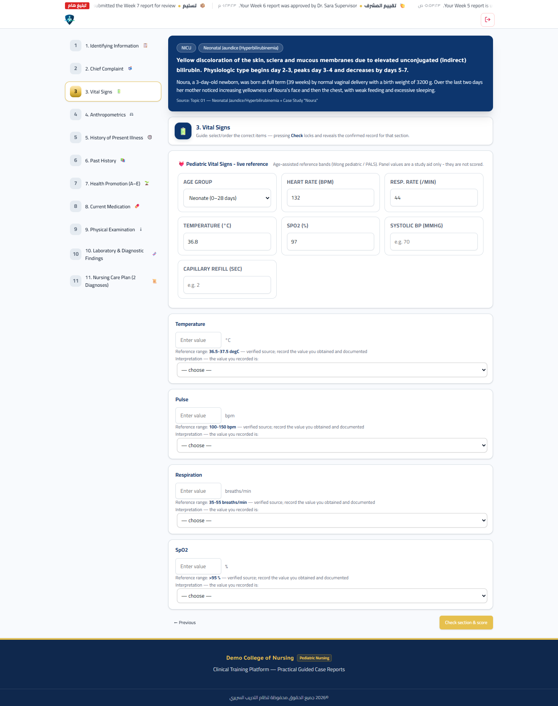
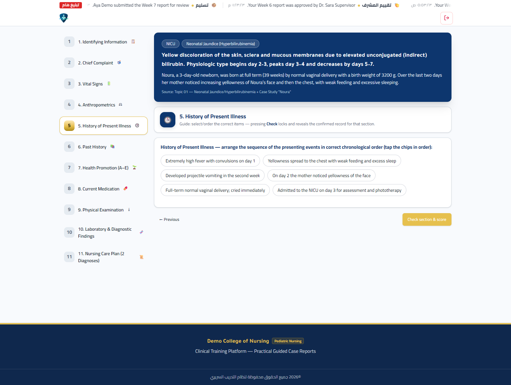
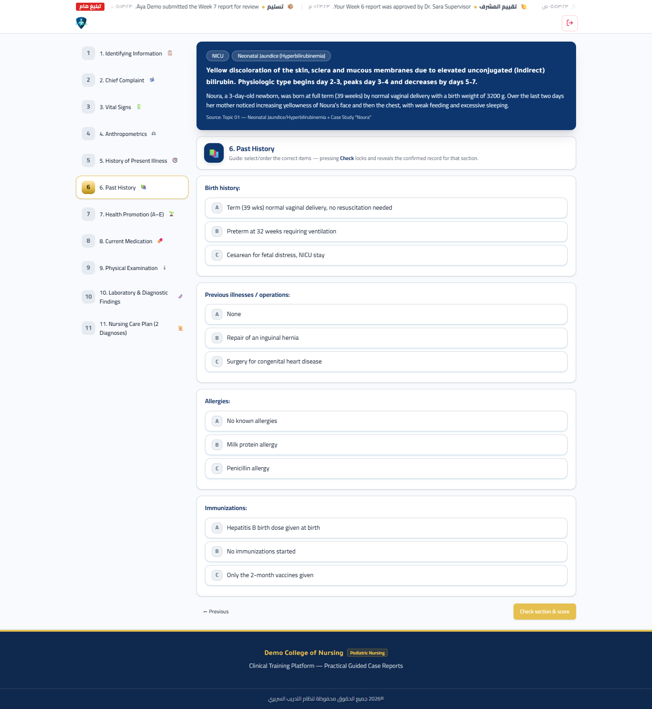
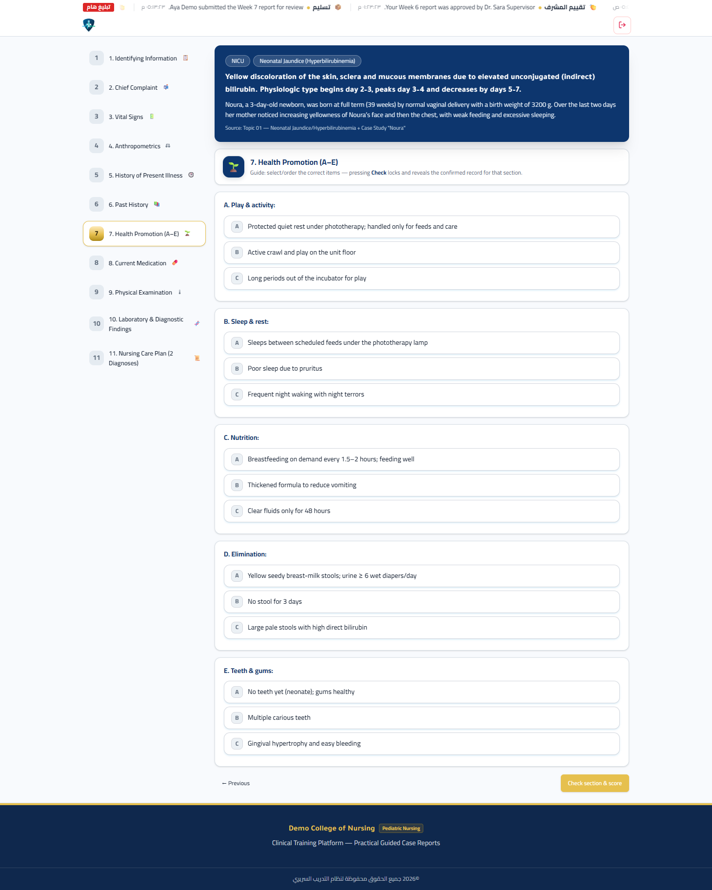
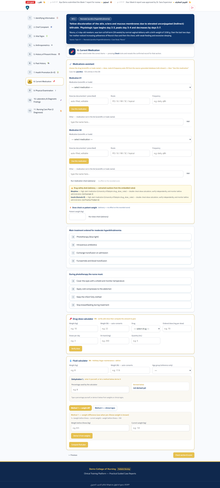
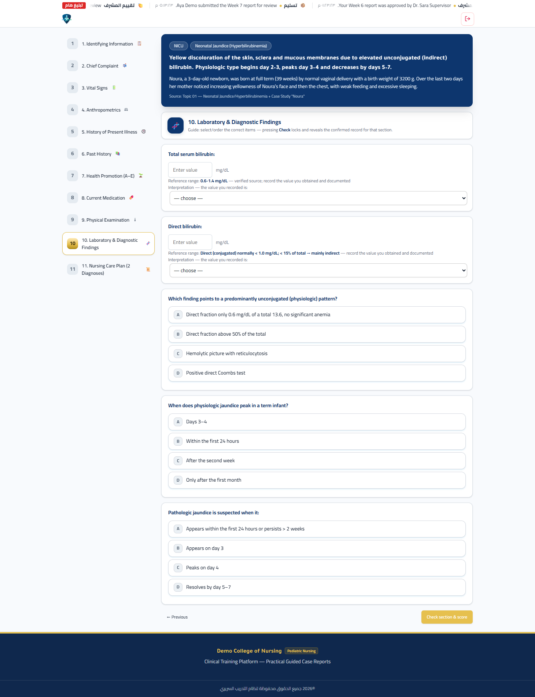
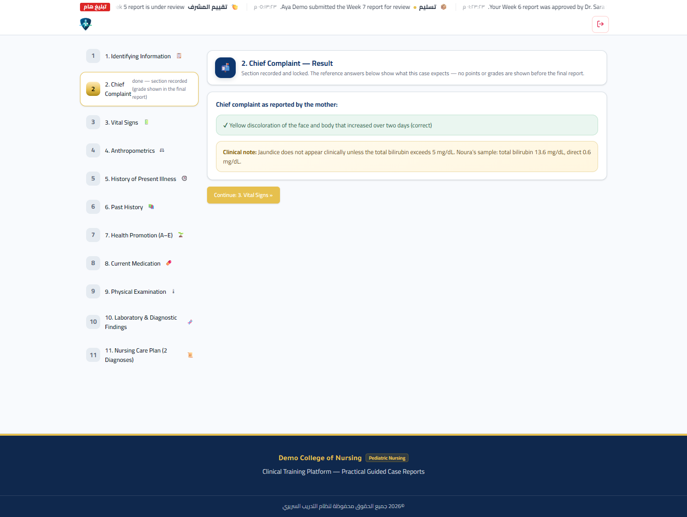
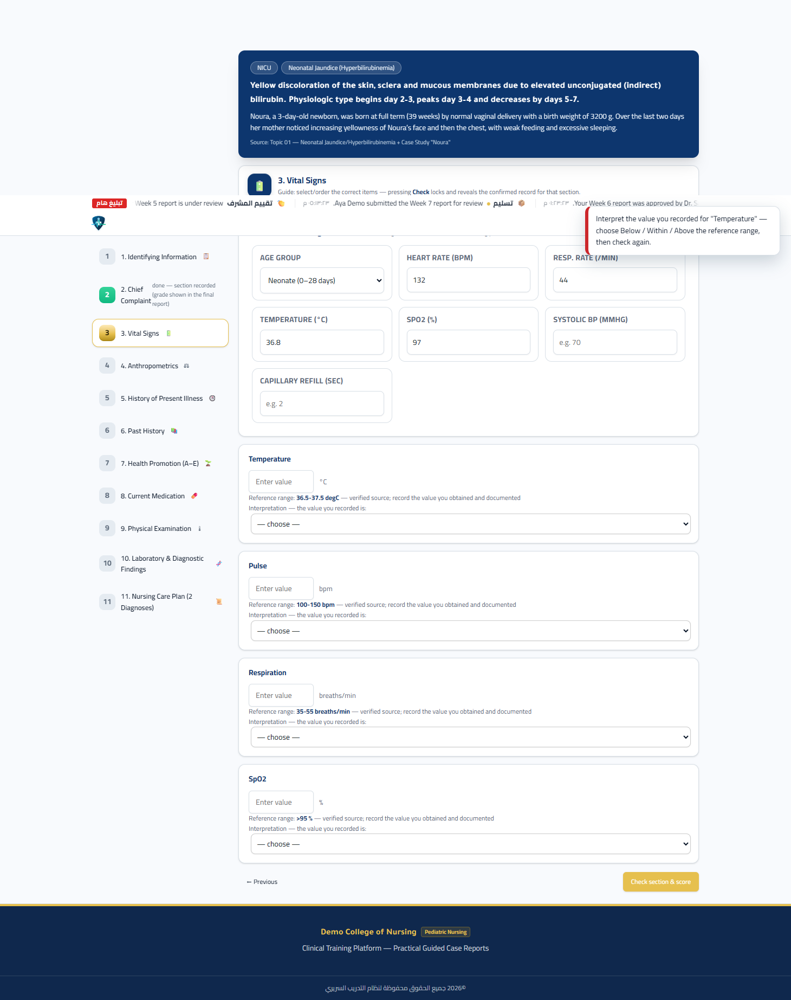
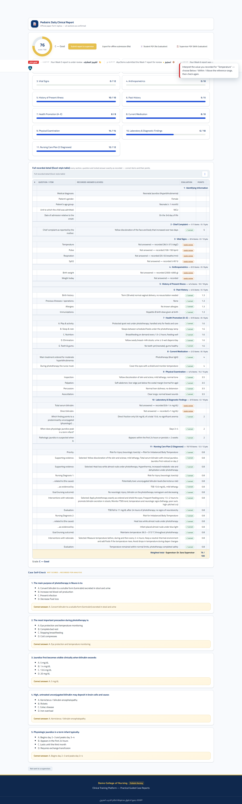
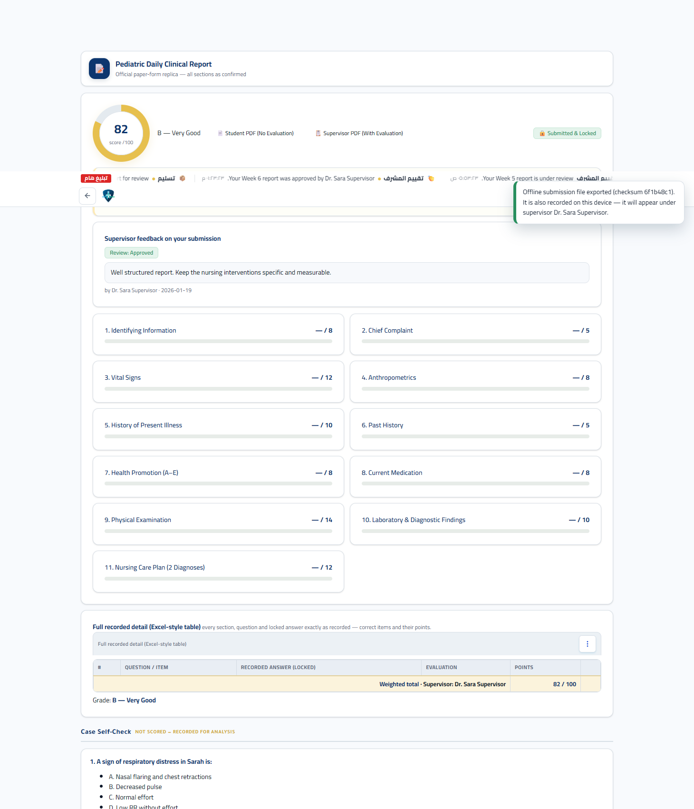

كيف تُنجز تقرير الحالة الأسبوعي بثقة
تعرف في هذه الورشة كيف يقرأ النظام إجاباتك، وكيف تقرأ أنت الحالة، وما الفائدة التي تعود عليك من كل قسم — بلا تفاصيل تقنية لا تعنيك.
1 نظرة عامة
فكرة بسيطة: كل أسبوع عملي تكتب فيه تقرير حالة واحد، وبنفس الصيغة الرسمية المعتمدة.
النظام لا يطلب منك مقالًا حرًّا، بل يقودك عبر مسار موجَّه: يعطيك حالة مرجعية (طفل بسيناريو وعلامات وتحاليل)، ثم يمرّ بك عبر أحد عشر قسمًا بالترتيب حتى تبني تقرير الأطفال اليومي (Pediatric Daily Clinical Report) كاملًا، ثم يحسب لك درجة من 100 حسب وزن كل قسم.
ما الذي يعود عليك
إتقان الصياغة
تتعلم تحويل بيانات الحالة إلى تقرير سريري منظّم بالصيغة المعتمدة، أسبوعًا بعد أسبوع.
قراءة الأرقام
تتدرب على تفسير العلامات الحيوية والتحاليل مقابل مداها الطبيعي بدقة.
خطة رعاية
تبني تشخيصين تمريضيين كاملين: السبب، الدليل، الهدف، التدخلات، التقييم.
تقييم موثّق
لكل أسبوع درجة ومراجعة من مشرفك وملاحظة، فتتبّع تقدّمك بوضوح.
2 كيف يفكّر النظام
افهم المنطق التدريبي من الخطوة الأولى، لتعرف أين تضع جهدك.
- تصلك حالة مرجعية حقيقية: طفل بسياقه وعلاماته وتحاليله.
- يقودك عبر الأقسام بالترتيب من المعلومات التعريفية إلى خطة الرعاية.
- في كل قسم، تأتي الإجابة من السيناريو الذي قرأته، لا من الحفظ.
- عند الضغط على «Check section & score» يُقفل القسم ويُثبّت جوابك، ثم يُريك الإجابات المرجعية والتغذية الراجعة والمراجع.
- لا تُعرض النقاط داخل القسم؛ تُجمع كلها في التقرير النهائي حسب أوزان الأقسام.
- قبل التسليم يتحقق النظام من تشابه تقريرك مع تقارير أخرى لضمان الأصالة.
3 كيف تقرأ الحالة
هذه أهم مهارة في الورشة: تحويل السيناريو إلى بيانات منظّمة.
عند اختيارك للتشخيص، يفتح النظام بطاقة الحالة أعلى كل قسم، وتضمّ:
| العنصر في البطاقة | ماذا يمنحك |
|---|---|
| الجناح (Ward) | سياق الحالة: عناية، دم، باطني، جراحي |
| عنوان الحالة (Title) | اسم التشخيص السريري |
| الملخّص (Abstract) | وصف موجز للمشكلة |
| السيناريو (Scenario) | القصة السريرية التي تبني عليها كل إجاباتك |
| المصدر (Source) | المرجع العلمي للحالة |
قاعدة القراءة
اقرأ السيناريو جملة جملة، وحوّل كل جملة إلى بند: العمر، الجنس، الوزن، زمن البداية، العرض، العلامة. هذه البنود هي نفسها التي ستُسأل عنها في الأقسام، فلا تبحث بعيدًا عن السيناريو.
1) اقرأ
اقرأ السيناريو كاملًا مرّة واحدة دون تركيز على الأرقام.
2
حوّل كل جملة إلى بند: عمر، وزن، زمن البداية، عرض، علامة.
3
اربط البنود لتفسير منطقي: هل النمط فسيولوجي أم مرضي؟
4 مثال تطبيقي: نورا
حالة «اليرقان الوليدي» من مكتبة النظام — نقرؤها معًا خطوة بخطوة.
السيناريو
الخطوة الأولى: استخراج البيانات
كل بند هنا قابل للتوثيق في موضعه: العمر والجنس في المعلومات التعريفية، والعرض في الشكوى، والتسلسل في تاريخ المرض الحالي.
الخطوة الثانية: التفسير العلمي
- ظهور اليرقان بعد 24 ساعة من الولادة يرجع النمط إلى اليرقان الفسيولوجي (وليس المرضي، الذي يبدأ خلال أول 24 ساعة).
- غلبة الجزء غير المقترن (البيليروبين المباشر منخفض مقابل الكلي المرتفع) يدعم النمط الفسيولوجي.
- الخطر الأساسي: ترسّب البيليروبين السام في الخلايا العصبية (خطر اليرقان النووي)، لذا تكون الأولوية العلاجية العلاج الضوئي.
5 إيقاع العمل الأسبوعي
النظام لا يعطيك كل الأسابيع دفعة واحدة؛ بل ينظّم إيقاعك الزمني.
حالة كل أسبوع في لوحتك
| الشارة | المعنى | ما تفعله |
|---|---|---|
| Available | الأسبوع متاح لك الآن | اضغط البطاقة ثم ابدأ التقرير |
| Open now | أسبوعك المعيّن حاليًّا (تذكرة) | هو أسبوعك المعتمد هذا الأسبوع |
| Scheduled | لم يُفتح بعد وفق الجدول | انتظر؛ يظهر لك موعد الفتح |
| Closed | انتهى وقت الفتح | راجع مشرفك |
| Submitted | أُنجز وسُلّم | «View report» لمعاينة تقريرك |
التذكرة الأسبوعية
قد يُخصَّص لك أسبوع معيّن بموقع محدد يظهر في أعلى لوحتك، وتبقى الأسابيع الأخرى مُعتمة حتى تُنجز أسبوعك، فلا تتشتّت بين أكثر من حالة في وقت واحد.
الحفظ التلقائي
يمكنك مغادرة الصفحة في أي وقت؛ النظام يحفظ مسودتك ويعيدك إلى حيث توقفت عند العودة.
6 الدخول واللوحة الرئيسية
شاشة واحدة للدخول، ثم لوحة تُلخّص أسبوعك.
- اكتب أول حروف اسمك ثم اختر اسمك الكامل من القائمة.
- أدخل رمزك السري المكوّن من ستة أرقام.
- يدخلك النظام تلقائيًّا إلى لوحة الطالب.

لوحة الطالب

شريط بياناتك
اسمك ومستشفاك ودوريتك ومشرفك.
حلقة المعدّل
متوسط درجاتك عبر الأسابيع المنجزة.
صندوق «How It Works»
تذكير مختصر بتسلسل العمل.
شبكة الأسابيع
قلب إدارة العمل: حالة كل أسبوع وتذكترك.
7 الأقسام الأحد عشر
كل قسم له غرض علمي ووزن محدد. اضغط القسم لعرض تفصيله.
| # | القسم | English | الوزن |
|---|---|---|---|
| 1 | المعلومات التعريفية | Identifying Information | 8 |
| 2 | الشكوى الرئيسية | Chief Complaint | 5 |
| 3 | العلامات الحيوية | Vital Signs | 12 |
| 4 | القياسات الجسمية | Anthropometrics | 8 |
| 5 | تاريخ المرض الحالي | History of Present Illness | 10 |
| 6 | التاريخ المرضي السابق | Past History | 5 |
| 7 | تعزيز الصحة | Health Promotion (A–E) | 8 |
| 8 | الأدوية الحالية | Current Medication | 8 |
| 9 | الفحص السريري | Physical Examination | 14 |
| 10 | التحاليل والنتائج التشخيصية | Laboratory & Diagnostic | 10 |
| 11 | خطة الرعاية التمريضية | Nursing Care Plan | 12 |
| المجموع | 100 |
1المعلومات التعريفية
Identifying Information8
الغرض: تثبيت هوية الحالة: الجنس، الفئة العمرية، الجناح، زمن الإدخال، ثم التشخيص الذي تعرّفت عليه من الجناح.
ما تسجّله: اختيارات محددة، وعند اختيار «Other…» يفتح حقل نص حر للوضع الحر. لا يُكشف التشخيص الصحيح قبل تأكيدك، ثم يظهر السجل المعتمد.

2الشكوى الرئيسية
Chief Complaint5
الغرض: توثيق الشكوى كما ترويها الأم، بكلماتها لا بتشخيصك.
ما تسجّله: وصف مختصر للعرض الرئيسي ومدّته وتطوّره.

3العلامات الحيوية
Vital Signs12
الغرض: قياس العلامات الحيوية وتفسير كل قيمة مقابل مداها المرجعي.
ما تسجّله: القيمة الرقمية، ثم تحديد موقعها: أقل من المدى، ضمنه، أو أعلى منه. القيمة غير الطبيعية ليست خطأ؛ الخطأ هو سوء تفسيرها.

4القياسات الجسمية
Anthropometrics8
الغرض: متابعة النمو: الوزن والطول ومحيط الرأس مقابل منحنى النمو.
ما تسجّله: القيم مع وحداتها الصحيحة ومقارنتها بوزن الولادة عند اللزوم.

5تاريخ المرض الحالي
History of Present Illness10
الغرض: ترتيب تسلسل الأحداث زمنيًّا من أول عرض إلى اللحظة الحالية، وتمييز الأحداث التي تخصّ هذه الحالة من غيرها.

6التاريخ المرضي السابق
Past History5
الغرض: تاريخ الولادة، والأمراض/العمليات السابقة، والحساسية، والتطعيمات.

7تعزيز الصحة
Health Promotion (A–E)8
الغرض: تقييم خمسة بنود: اللعب والنشاط، النوم والراحة، التغذية، الإخراج، الأسنان واللثة.

8الأدوية الحالية
Current Medication8
الغرض: توثيق العلاج الأساسي المُوصف ومسؤوليات التمريض المرتبطة به.
مثال: العلاج الضوئي بالأشعة الزرقاء، وتغطية العينين، ومراقبة الحرارة، واستمرار الرضاعة أثناء الجلسة.

9الفحص السريري
Physical Examination14
الغرض: توثيق الفحص بمهاراته الأربع: بالنظر، والجس، والطرق، والسماع.

10التحاليل والنتائج التشخيصية
Laboratory & Diagnostic10
الغرض: إدخال قيم التحاليل وتفسيرها، ثم ربطها بالصورة السريرية (فسيولوجي أم مرضي).
مثال نورا: البيليروبين الكلي 13.6 ملغم/دل، والمباشر 0.6 ملغم/دل ⇒ النمط غير المقترن.

11خطة الرعاية التمريضية
Nursing Care Plan12
الغرض: بناء تشخيصين تمريضيين كاملين. لكل تشخيص: الأولوية، والأدلة الداعمة، والسبب (Related to)، والأدلة كما تظهر (As evidenced by)، والهدف، والتدخلات مع مبرّرها، والتقييم.

8 أنواع الأسئلة وكيف تجيب
معرفة نوع السؤال تحميك من فقدان الدرجات.
اختيار مفرد (Single)
خيار واحد صحيح فقط. اقرأ جميع الخيارات قبل الاختيار. مثال: «الجنس: أنثى / ذكر».
اختيار متعدّد (Multi)
عليك تحديد كل الخيارات الصحيحة دون أي خيار خاطئ. اختيار خيار صحيح إضافي غير مطلوب قد يجعل البند خاطئًا. اختر ما يطلبه السؤال بالضبط.
ترتيب (Order)
رتّب الأحداث زمنيًّا كما وقعت في السيناريو. يُمنح لك تدرّج في الدرجة حسب صحة الترتيب. مثال: من الولادة الطبيعية، إلى ملاحظة الاصفرار في اليوم الثاني، إلى انتشاره مع ضعف الرضاعة، إلى الإدخال في اليوم الثالث.
قيمة رقمية مع تفسير
أدخل القيمة، ثم حدّد موقعها من المدى المرجعي: أقل من المدى / ضمنه / أعلى منه. القاعدة: قياس دقيق + تفسير صحيح = بند صحيح.
نص حر (Text)
حقل كتابة للعرض الذي وثّقته. أجب بكلماتك من السيناريو؛ الإجابات التي لا مفتاح لها تُسجَّل ولا تُحتسب.
خطة الرعاية (NCP)
سلسلة مركّبة تبني تشخيصًا كاملًا: السبب، والدليل، والهدف، والتدخلات، والتقييم. تُكرَّر لتشخيصين.
9 قراءة القيم وتفسيرها
هنا يتحوّل الطالب من ناقل أرقام إلى مفسّر سريري.
لكل قيمة مُقاسة مدى مرجعي. مهمتك أن تحدد أين تقع قيمتك منه:
| القياس | المدى المرجعي |
|---|---|
| الحرارة | 36.5 – 37.5 مئوية |
| معدل القلب (نبضة/د) | وليد 100–160 · رضيع 100–140 · طفل صغير 80–130 · مدرسي 70–110 |
| معدل التنفس (نفس/د) | وليد 40–60 · رضيع 30–50 · طفل صغير 20–30 · مدرسي 20–25 |
| تشبّع الأكسجين | 95 – 100% |
| الضغط الشرياني | حسب جدول العمر |
| البيليروبين الكلي | غير المقترن الطبيعي 0.2 – 1.4 ملغم/دل، واليرقان يظهر سريريًّا عند تجاوز 5 ملغم/دل |
| البيليروبين المباشر | أقل من 1.0 ملغم/دل (أو أقل من 15% من الكلي) ⇒ النمط غير المقترن |
10 زر الفحص والتغذية الراجعة
هذه هي لحظة التعلّم الحقيقية في النظام.
عند ضغطك على «Check section & score» يحدث ما يلي:
- يتحقق النظام أولًا من أن كل قيمة مُقاسة تحمل تفسيرًا؛ وإن غاب، ينبّهك لتحديده وينتقل بك إلى البند.
- يُقفل القسم ويُثبّت إجاباتك (Recorded and locked) فلا تتغير.
- يعرض الإجابات المرجعية التي تتوقعها هذه الحالة، دون عرض أي نقاط قبل التقرير النهائي.
- عند أي بند خاطئ، يعرض تلميحًا معرفيًّا (Knowledge hint) ومرجعًا علميًّا (Source reference).


11 التقرير النهائي وعلامتك
بعد إتمام الأقسام تُجمع الدرجة ويظهر التقرير الرسمي.
عناصر التقرير
- حلقة الدرجة من 100.
- الدرجة اللفظية (A إلى F).
- شريط لكل قسم يعرض المُحقَّق مقابل وزنه.
- التقرير الورقي الرسمي بكل أقسامه.
- الفحص الذاتي (Self-Check) أسفل الصفحة.
الدرجة اللفظية
| A | 90 وأكثر | Excellent |
| B | 80 – 89 | Very Good |
| C | 70 – 79 | Good |
| D | 60 – 69 | Acceptable |
| E | 50 – 59 | Weak |
| F | أقل من 50 | Fail |


الفحص الذاتي (Case Self-Check)
أسئلة تقييم فهمك في نهاية التقرير. لا تُحتسب في درجتك، لكنها تُسجَّل للتحليل؛ استخدمها للتأكد من فهمك للجوهر العلمي قبل التسليم.

12 التسليم والمتابعة
طريقة التسليم المعتمدة: ملف تصدير يُسلَّم لمشرفك.
- أكمل الأقسام الأحد عشر وأقفلها.
- افتح التقرير النهائي وتأكّد من الدرجة والأشرطة.
- اضغط Export for offline submission (file) لحفظ ملف تقريرك.
- سلّم الملف لمشرفك بأي وسيلة (ذاكرة، بلوتوث، رسالة)؛ وهو يستورده من شاشة استلام الملفات.

بعد التسليم
يصبح تقريرك مقفلًا، وقد يضيف مشرفك ملاحظة. من لوحة الأسابيع تفتح أسبوعك المُسلَّم بزر «View report» لترى:
- شارة Submitted & Locked.
- صندوق معاينة التقرير المسلَّم.
- حالة المراجعة: Under review / Approved / Needs revision، مع ملاحظة المشرف.

معاينة خطة الرعاية
من داخل قسم خطة الرعاية يمكنك فتح معاينة تجمع تشخيصيك في صيغة منظّمة للتأكد من اكتمالهما قبل الفحص.

13 أسئلة شائعة
إجابات دقيقة عن أكثر ما يشغل الطالب.
هل يمكنني مغادرة الصفحة والعودة لاحقًا؟
لماذا لا أرى درجتي داخل القسم؟
ظهر لي «Interpret the value…» فماذا أفعل؟
هل القيمة غير الطبيعية تُحسب خطأً؟
ما الفرق بين الشكوى الرئيسية والتاريخ المرض الحالي؟
كم تشخيصًا أكتب في خطة الرعاية؟
14 اختبر نفسك
أسئلة الفحص الذاتي الخمس لحالة نورا كما تظهر في النظام. اختر إجابة لتعرف صحّتها فورًا.